Programming Project #4: Neural Radiance Field
Overview
I calibrated my own camera with ArUco tags, created a multi-view dataset,
fit a 2D neural field to single images, and implemented a full NeRF for both
the Lego scene and my own captured object.
Part 0: Camera Calibration and 3D Scanning
0.1–0.3: Calibration and Poses
- Captured ~40 ArUco calibration images with fixed zoom on my phone.
- Estimated intrinsics and distortion with OpenCV’s calibration routine.
- Captured ~45 images of a small object next to a single ArUco tag.
- Estimated per-image poses using solvePnP and converted to camera-to-world matrices.
0.1-0.2: tags and object
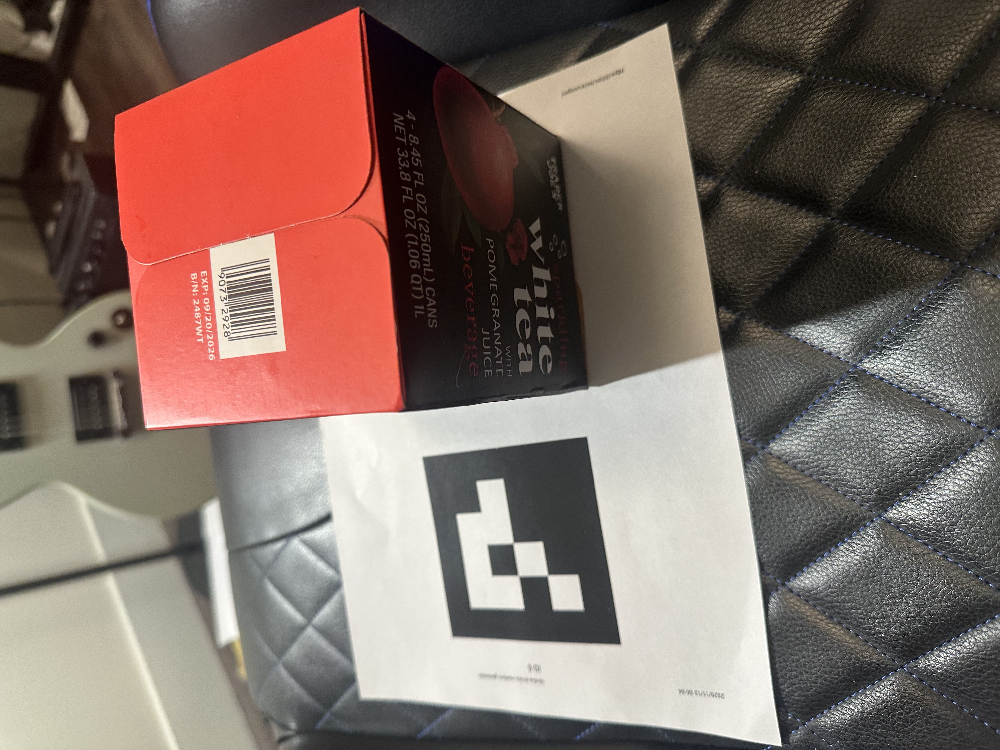
object example
0.3: Camera Frustums in Viser
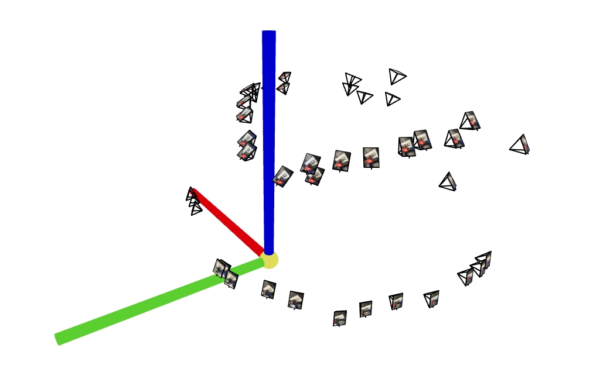
Viser camera frustums 1.
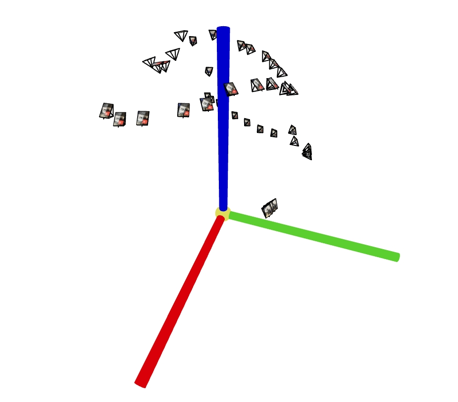
Viser camera frustums 2.
0.4: Undistortion and Dataset Packaging
- Undistorted images with the calibrated intrinsics and distortion coefficients.
- Resized to a common resolution and split into train / val / test sets.
- Saved
images_*, c2ws_*, and focal in a single .npz file.
Part 1: Fit a Neural Field to a 2D Image
1.1: Model Architecture Report
- Input: 2D pixel coordinates normalized to [0, 1].
- Positional encoding: up to frequency level L (varied in experiments).
- Baseline MLP: 4 hidden layers, width 128, ReLU activations.
- Output: 3 channels (RGB) with Sigmoid; supervised on image normalized to [0, 1].
- Loss: MSE; optimizer: Adam; learning rate: 1e-2; batch size: 10k random pixels.
1.2: Training Progression — Provided Test Image
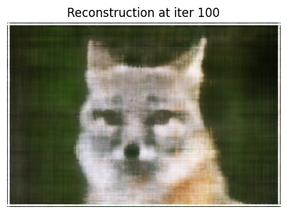
Iteration 100.
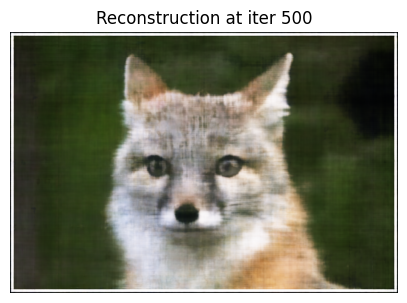
Iteration 500.
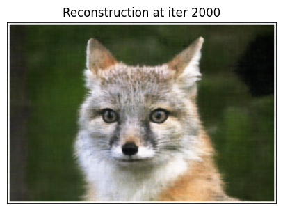
Iteration 2000 (final).
1.3: Training Progression — My Own Image
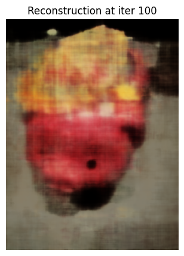
Iteration 100.
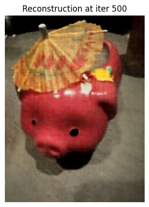
Iteration 500.
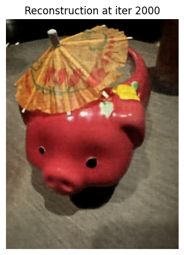
Iteration 2500 (final).
1.4: Final Results — 2×2 Hyperparameter
The two positional-encoding frequencies I swept over were L = 6 and L = 10, and the two network widths were 128 and 256 hidden units. In the 2×2 grid of results, the low-frequency PE (L=6) with width 128 produced the smoothest but blurriest reconstructions, while increasing either PE frequency or width improved sharpness and detail. The high-frequency PE (L=10) with width 256 gave the best visual quality and highest PSNR, capturing the most high-frequency structure in the scene.
1.5: PSNR Curve
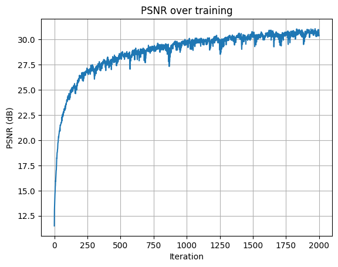
PSNR vs iterations for piggy.
Part 2: Fit a Neural Radiance Field from Multi-view Images
2.1–2.3: Implementation Summary
- Loaded Lego images and camera-to-world matrices from
lego_200x200.npz.
- Implemented camera-to-world transforms and pixel-to-ray conversion using intrinsics and extrinsics.
- Sampled rays either globally across all images or per-image, with near = 2.0 and far = 6.0.
- Sampled 32–64 points along each ray with stratified perturbation during training.
- Dataloader returns ray origins, ray directions, and target RGB values.
2.3: Visualization of Rays and Samples with Cameras
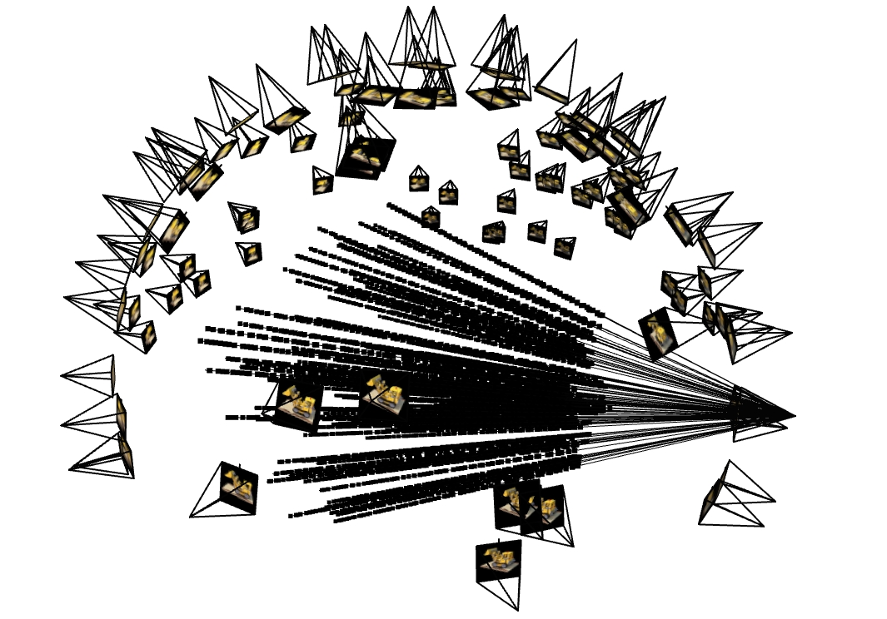
Lego single camera.
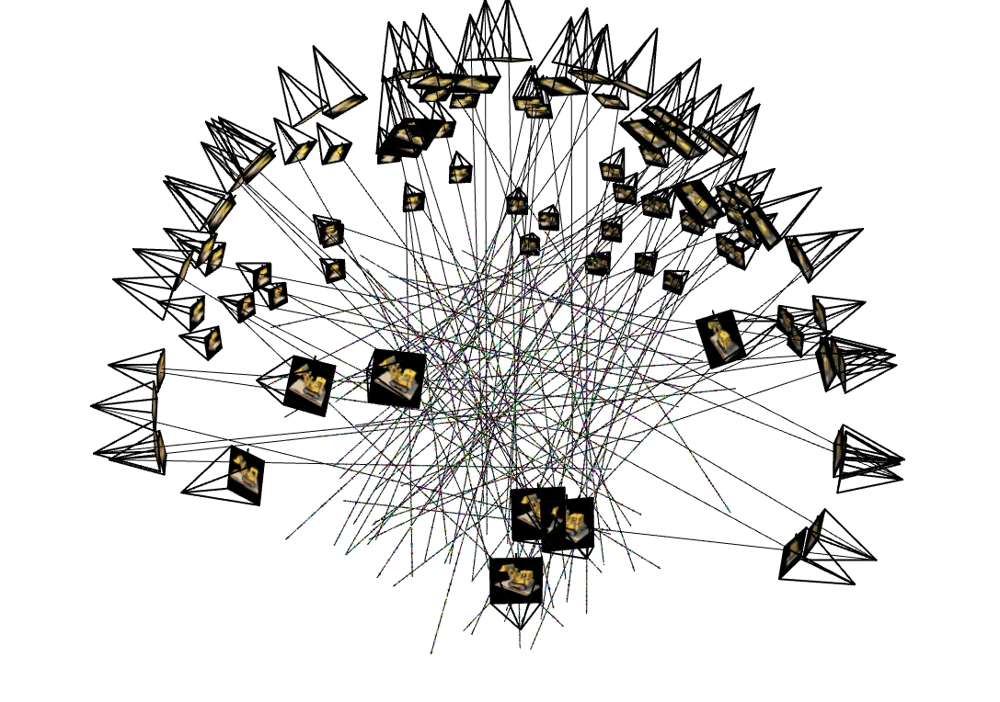
Lego multi-camera.
2.4: NeRF Network
- Inputs: positional-encoded 3D points (Lxyz = 10) and view directions (Ldir = 4).
- MLP: multiple 256-wide layers with a skip connection.
- Outputs: density (ReLU) and RGB color (Sigmoid) for each sample point.
- Optimizer: Adam, learning rate 5e-4, batch size 10k rays.
2.5: Volume Rendering
- Computed per-sample alpha from densities and step size.
- Used cumulative transmittance and alpha to get per-sample weights.
- Final pixel color = weighted sum of sample colors.
- Implementation passes the provided correctness test.
2.5: Lego Training Progression
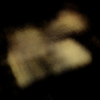
Lego — iteration 100.
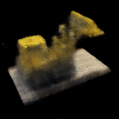
Lego — iteration 500.
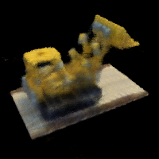
Lego — iteration 1000.
2.5: PSNR Curve on Validation Set
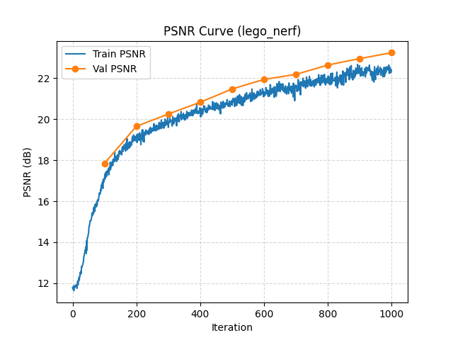
Lego validation PSNR over training iterations.
2.5: Spherical Rendering Video (Lego)
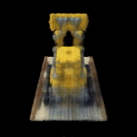
GIF — camera circling lego showing novel views.
Part 2.6: Training with My Own Data
2.6.1: GIF of Camera Circling My Object
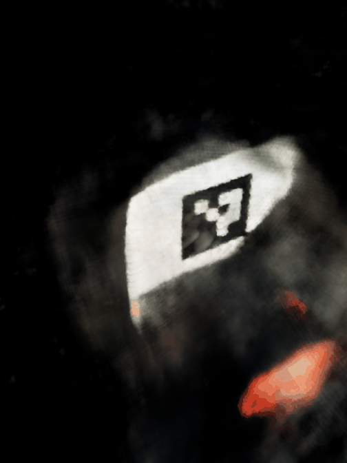
GIF — camera circling my object showing novel views.
2.6.2: Code / Hyperparameter Changes
- Adjusted near / far to 0.02 and 0.5 to match my scene’s scale.
- Used 64 samples per ray.
- Set resize_factor=6 (from 4032x3024 to 672x504) for manageable training time.
- Used a learning rate of lr=5e-4 and batch_size=4096 for 2000 iterations.
2.6.3: Training Loss Plot
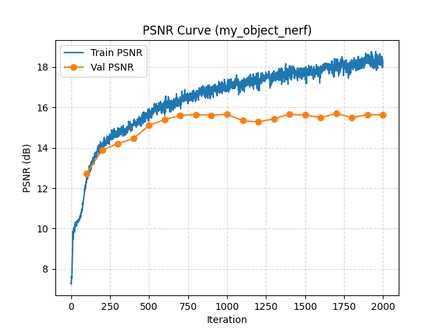
Training loss vs iterations for my object NeRF.
2.6.4: Intermediate Renders
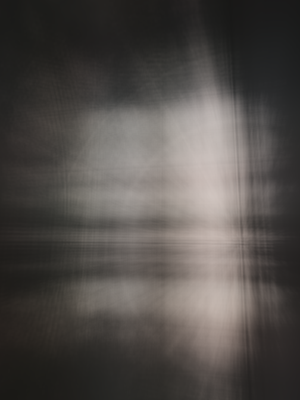
Iteration 100.
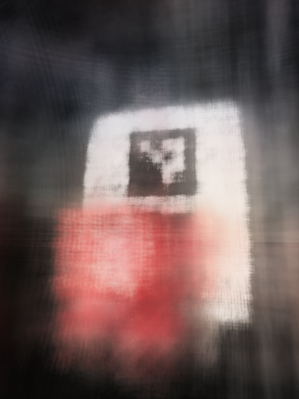
Iteration 500.
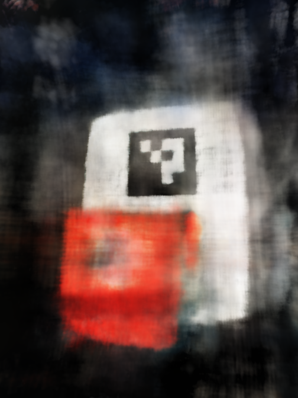
Iteration 2000.